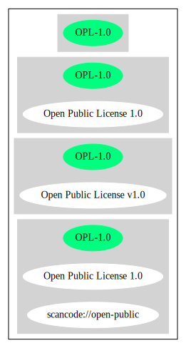

Key |
Value |
|---|---|
Fullname |
Open Public License v1.0 |
Shortname |
OPL-1.0 |
Rating |
Unknown, probably Attention or Stop or No-Go |
Classification |
WeakCopyleft |
Other Names:
scancode://open-public
Open Public License 1.0
↓“This license is not compatible with the DebianFreeSoftwareGuidelines (DFSG-unfree)” (source: Debian Free Software Guidelines)
Homepage: http://ksoap.objectweb.org/software/license/opl.html
SPDX: http://spdx.org/licenses/OPL-1.0.json
http://old.koalateam.com/jackaroo/OPL_1_0.TXT
https://fedoraproject.org/wiki/Licensing/Open_Public_License
OPEN PUBLIC LICENSE
Version 1.0
1. Definitions.
1.1. "Contributor" means each entity that creates or contributes to the creation of
Modifications.
1.2. "Contributor Version" means the combination of the Original Code, prior
Modifications used by a Contributor, and the Modifications made by that particular
Contributor.
1.3. "Covered Code" means the Original Code or Modifications or the combination
of the Original Code and Modifications, in each case including portions thereof.
1.4. "Electronic Distribution Mechanism" means a mechanism generally accepted
in the software development community for the electronic transfer of data.
1.5. "Executable" means Covered Code in any form other than Source Code.
1.6. "Initial Developer" means the individual or entity identified as the Initial
Developer in the Source Code notice required by Exhibit A.
1.7. "Larger Work" means a work, which combines Covered Code or portions
thereof with code not governed by the terms of this License.
1.8. "License" means this document and the corresponding addendum describe in
section 6.4 below.
1.9. "Modifications" means any addition to or deletion from the substance or
structure of either the Original Code or any previous Modifications. When Covered
Code is released as a series of files, a Modification is:
A. Any addition to or deletion from the contents of a file containing Original
Code or previous Modifications.
B. Any new file that contains any part of the Original Code or previous
Modifications.
1.10. "Original Code" means Source Code of computer software code which is
described in the Source Code notice required by Exhibit A as Original Code, and
which, at the time of its release under this License is not already Covered Code
governed by this License.
1.11. "Source Code" means the preferred form of the Covered Code for making
modifications to it, including all modules it contains, plus any associated interface
definition files, scripts used to control compilation and installation of an Executable,
or a list of source code differential comparisons against either the Original Code or
another well known, available Covered Code of the Contributor's choice. The Source
Code can be in a compressed or archival form, provided the appropriate
decompression or de-archiving software is widely available for no charge.
1.12. "You" means an individual or a legal entity exercising rights under, and
complying with all of the terms of, this License or a future version of this License
issued under Section 6.1. For legal entities, "You" includes any entity which controls,
is controlled by, or is under common control with You. For purposes of this definition,
"control" means (a) the power, direct or indirect, to cause the direction or
management of such entity, whether by contract or otherwise, or (b) ownership of
fifty percent (50%) or more of the outstanding shares or beneficial ownership of such
entity.
1.13 "License Author" means Lutris Technologies, Inc.
2. Source Code License.
2.1. The Initial Developer Grant.
The Initial Developer hereby grants You a worldwide, royalty-free, non-exclusive
license, subject to third party intellectual property claims:
(a) under intellectual property rights (other than patent or trademark) to use,
reproduce, modify, display, perform, sublicense and distribute the Original
Code (or portions thereof) with or without Modifications, or as part of a Larger
Work; and
(b) under patents now or hereafter owned or controlled by Initial Developer,
to make, have made, use and sell ("offer to sell and import") the Original
Code (or portions thereof), but solely to the extent that any such patent is
reasonably necessary to enable You to Utilize the Original Code (or portions
thereof) and not to any greater extent that may be necessary to Utilize further
Modifications or combinations.
2.2. Contributor Grant.
Each Contributor hereby grants You a worldwide, royalty-free, non-exclusive license,
subject to third party intellectual property claims:
(a) under intellectual property rights (other than patent or trademark) to use,
reproduce, modify, display, perform, sublicense and distribute the
Modifications created by such Contributor (or portions thereof) either on an
unmodified basis, with other Modifications, as Covered Code or as part of a
Larger Work; and
(b) under patents now or hereafter owned or controlled by Contributor, to to
make, have made, use and sell ("offer to sell and import") the Contributor
Version (or portions thereof), but solely to the extent that any such patent is
reasonably necessary to enable You to Utilize the Contributor Version (or
portions thereof), and not to any greater extent that may be necessary to
Utilize further Modifications or combinations.
3. Distribution Obligations.
3.1. Application of License.
The Modifications which You create or to which You contribute are governed by the
terms of this License, including without limitation Section 2.2. The Source Code
version of Covered Code may be distributed only under the terms of this License or a
future version of this License released under Section 6.1, and You must include a
copy of this License with every copy of the Source Code You distribute. You may not
offer or impose any terms on any Source Code version that alters or restricts the
applicable version of this License or the recipients' rights hereunder. However, You
may include an additional document offering the additional rights described in
Section 3.5.
3.2. Availability of Source Code.
Any Modification which You create or to which You contribute must be made
available, prior to any use, except for internal development and practice, in Source
Code form under the terms of this License either on the same media as an
Executable version or via an accepted Electronic Distribution Mechanism to anyone
to whom you made an Executable version available; and if made available via
Electronic Distribution Mechanism, must remain available for at least twelve (12)
months after the date it initially became available, or at least six (6) months after a
subsequent version of that particular Modification has been made available to such
recipients. You shall notify the Initial Developer of the Modification and the location of
the Source Code via the contact means provided for in the Developer Specific
license. Initial Developer will be acting as maintainer of the Source Code and may
provide an Electronic Distribution mechanism for the Modification to be made
available.
3.3. Description of Modifications.
You must cause all Covered Code to which you contribute to contain a file
documenting the changes You made to create that Covered Code and the date of
any change. You must include a prominent statement that the Modification is derived,
directly or indirectly, from Original Code provided by the Initial Developer and
including the name of the Initial Developer in (a) the Source Code, and (b) in any
notice in an Executable version or related documentation in which You describe the
origin or ownership of the Covered Code.
3.4. Intellectual Property Matters
(a) Third Party Claims.
If You have knowledge that a party claims an intellectual property right in
particular functionality or code (or its utilization under this License), you must
include a text file with the source code distribution titled "LEGAL" which
describes the claim and the party making the claim in sufficient detail that a
recipient will know whom to contact. If you obtain such knowledge after You
make Your Modification available as described in Section 3.2, You shall
promptly modify the LEGAL file in all copies You make available thereafter
and shall take other steps (such as notifying appropriate mailing lists or
newsgroups) reasonably calculated to inform those who received the
Covered Code that new knowledge has been obtained.
(b) Representations.
Contributor represents that, except as disclosed pursuant to Section 3.4(a)
above, Contributor believes that Contributor's Modifications are Contributor's
original creation(s) and/or Contributor has sufficient rights to grant the rights
conveyed by this License.
3.5. Required Notices.
You must duplicate the notice in Exhibit A in each file of the Source Code, and this
License in any documentation for the Source Code, where You describe recipients'
rights relating to Covered Code. If You created one or more Modification(s), You may
add your name as a Contributor to the notice described in Exhibit A. If it is not
possible to put such notice in a particular Source Code file due to its structure, then
you must include such notice in a location (such as a relevant directory file) where a
user would be likely to look for such a notice. You may choose to offer, and to charge
a fee for, warranty, support, indemnity or liability obligations to one or more recipients
of Covered Code. However, You may do so only on Your own behalf, and not on
behalf of the Initial Developer or any Contributor. You must make it absolutely clear
that any such warranty, support, indemnity or liability obligation is offered by You
alone, and You hereby agree to indemnify the Initial Developer and every Contributor
for any liability incurred by the Initial Developer or such Contributor as a result of
warranty, support, indemnity or liability terms You offer.
3.6. Distribution of Executable Versions.
You may distribute Covered Code in Executable form only if the requirements of
Section 3.1-3.5 have been met for that Covered Code, and if You include a notice
stating that the Source Code version of the Covered Code is available under the
terms of this License, including a description of how and where You have fulfilled the
obligations of Section 3.2. The notice must be conspicuously included in any notice
in an Executable version, related documentation or collateral in which You describe
recipients' rights relating to the Covered Code. You may distribute the Executable
version of Covered Code under a license of Your choice, which may contain terms
different from this License, provided that You are in compliance with the terms of this
License and that the license for the Executable version does not attempt to limit or
alter the recipient's rights in the Source Code version from the rights set forth in this
License. If You distribute the Executable version under a different license You must
make it absolutely clear that any terms which differ from this License are offered by
You alone, not by the Initial Developer or any Contributor. You hereby agree to
indemnify the Initial Developer and every Contributor for any liability incurred by the
Initial Developer or such Contributor as a result of any such terms You offer. If you
distribute executable versions containing Covered Code, you must reproduce the
notice in Exhibit B in the documentation and/or other materials provided with the
product.
3.7. Larger Works.
You may create a Larger Work by combining Covered Code with other code not
governed by the terms of this License and distribute the Larger Work as a single
product. In such a case, You must make sure the requirements of this License are
fulfilled for the Covered Code.
4. Inability to Comply Due to Statute or Regulation.
If it is impossible for You to comply with any of the terms of this License with respect
to some or all of the Covered Code due to statute or regulation then You must: (a)
comply with the terms of this License to the maximum extent possible; and (b) Cite
all of the statutes or regulations that prohibit you from complying fully with this
license. (c) describe the limitations and the code they affect. Such description must
be included in the LEGAL file described in Section 3.4 and must be included with all
distributions of the Source Code. Except to the extent prohibited by statute or
regulation, such description must be sufficiently detailed for a recipient of ordinary
skill to be able to understand it.
5. Application of this License.
This License applies to code to which the Initial Developer has attached the notice in
Exhibit A, and to related Covered Code.
6. Versions of the License.
6.1. New Versions.
License Author may publish revised and/or new versions of the License from time to
time. Each version will be given a distinguishing version number and shall be
submitted to opensource.org for certification.
6.2. Effect of New Versions.
Once Covered Code has been published under a particular version of the License,
You may always continue to use it under the terms of that version. You may also
choose to use such Covered Code under the terms of any subsequent version of the
License published by Initial Developer. No one other than Initial Developer has the
right to modify the terms applicable to Covered Code created under this License.
6.3. Derivative Works.
If you create or use a modified version of this License, except in association with the
required Devloper Specific License described in section 6.4, (which you may only do
in order to apply it to code which is not already Covered Code governed by this
License), you must (a) rename Your license so that the phrases "Open", "OpenPL",
"OPL" or any confusingly similar phrase do not appear anywhere in your license and
(b) otherwise make it clear that your version of the license contains terms which differ
from the Open Public License. (Filling in the name of the Initial Developer, Original
Code or Contributor in the notice described in Exhibit A shall not of themselves be
deemed to be modifications of this License.)
6.4. Required Additional Developer Specific License
This license is a union of the following two parts that should be found as text files in
the same place (directory), in the order of preeminence:
[1] A Developer specific license.
[2] The contents of this file OPL.html, stating the general licensing policy of
the software.
In case of conflicting dispositions in the parts of this license, the terms of the lower-
numbered part will always be superseded by the terms of the higher numbered part.
7. DISCLAIMER OF WARRANTY.
COVERED CODE IS PROVIDED UNDER THIS LICENSE ON AN "AS IS" BASIS,
WITHOUT WARRANTY OF ANY KIND, EITHER EXPRESSED OR IMPLIED,
INCLUDING, WITHOUT LIMITATION, WARRANTIES THAT THE COVERED CODE
IS FREE OF DEFECTS, MERCHANTABLE, FIT FOR A PARTICULAR PURPOSE
OR NON-INFRINGING. THE ENTIRE RISK AS TO THE QUALITY AND
PERFORMANCE OF THE COVERED CODE IS WITH YOU. SHOULD ANY
COVERED CODE PROVE DEFECTIVE IN ANY RESPECT, YOU (NOT THE
INITIAL DEVELOPER OR ANY OTHER CONTRIBUTOR) ASSUME THE COST OF
ANY NECESSARY SERVICING, REPAIR OR CORRECTION. THIS DISCLAIMER
OF WARRANTY CONSTITUTES AN ESSENTIAL PART OF THIS LICENSE. NO
USE OF ANY COVERED CODE IS AUTHORIZED HEREUNDER EXCEPT UNDER
THIS DISCLAIMER.
8. TERMINATION.
8.1 Termination upon Breach
This License and the rights granted hereunder will terminate automatically if You fail
to comply with terms herein and fail to cure such breach within 30 days of becoming
aware of the breach. All sublicenses to the Covered Code, which are properly
granted, shall survive any termination of this License. Provisions that, by their nature,
must remain in effect beyond the termination of this License shall survive.
8.2. Termination Upon Litigation.
If You initiate litigation by asserting a patent
infringement claim (excluding declatory judgment actions) against Initial Developer or
a Contributor (the Initial Developer or Contributor against whom You file such action
is referred to as "Participant") alleging that:
(a) such Participant's Contributor Version directly or indirectly infringes any
patent, then any and all rights granted by such Participant to You under
Sections 2.1 and/or 2.2 of this License shall, upon 60 days notice from
Participant terminate prospectively, unless if within 60 days after receipt of
notice You either: (i) agree in writing to pay Participant a mutually agreeable
reasonable royalty for Your past and future use of Modifications made by
such Participant, or (ii) withdraw Your litigation claim with respect to the
Contributor Version against such Participant. If within 60 days of notice, a
reasonable royalty and payment arrangement are not mutually agreed upon
in writing by the parties or the litigation claim is not withdrawn, the rights
granted by Participant to You under Sections 2.1 and/or 2.2 automatically
terminate at the expiration of the 60 day notice period specified above.
(b) any software, hardware, or device, other than such Participant's
Contributor Version, directly or indirectly infringes any patent, then any rights
granted to You by such Participant under Sections 2.1(b) and 2.2(b) are
revoked effective as of the date You first made, used, sold, distributed, or
had made, Modifications made by that Participant.
8.3. If You assert a patent infringement claim against Participant alleging that such
Participant's Contributor Version directly or indirectly infringes any patent where such
claim is resolved (such as by license or settlement) prior to the initiation of patent
infringement litigation, then the reasonable value of the licenses granted by such
Participant under Sections 2.1 or 2.2 shall be taken into account in determining the
amount or value of any payment or license.
8.4. In the event of termination under Sections 8.1 or 8.2 above, all end user license
agreements (excluding distributors and resellers) which have been validly granted by
You or any distributor hereunder prior to termination shall survive termination.
9. LIMITATION OF LIABILITY.
UNDER NO CIRCUMSTANCES AND UNDER NO LEGAL THEORY, WHETHER
TORT (INCLUDING NEGLIGENCE), CONTRACT, OR OTHERWISE, SHALL THE
INITIAL DEVELOPER, ANY OTHER CONTRIBUTOR, OR ANY DISTRIBUTOR OF
COVERED CODE, OR ANY SUPPLIER OF ANY OF SUCH PARTIES, BE LIABLE
TO YOU OR ANY OTHER PERSON FOR ANY INDIRECT, SPECIAL, INCIDENTAL,
OR CONSEQUENTIAL DAMAGES OF ANY CHARACTER INCLUDING, WITHOUT
LIMITATION, DAMAGES FOR LOSS OF GOODWILL, WORK STOPPAGE,
COMPUTER FAILURE OR MALFUNCTION, OR ANY AND ALL OTHER
COMMERCIAL DAMAGES OR LOSSES, EVEN IF SUCH PARTY SHALL HAVE
BEEN INFORMED OF THE POSSIBILITY OF SUCH DAMAGES. THIS LIMITATION
OF LIABILITY SHALL NOT APPLY TO LIABILITY FOR DEATH OR PERSONAL
INJURY RESULTING FROM SUCH PARTY'S NEGLIGENCE TO THE EXTENT
APPLICABLE LAW PROHIBITS SUCH LIMITATION. SOME JURISDICTIONS DO
NOT ALLOW THE EXCLUSION OR LIMITATION OF INCIDENTAL OR
CONSEQUENTIAL DAMAGES, SO THAT EXCLUSION AND LIMITATION MAY
NOT APPLY TO YOU.
10. U.S. GOVERNMENT END USERS.
The Covered Code is a "commercial item," as that term is defined in 48 C.F.R. 2.101
(Oct. 1995), consisting of "commercial computer software" and "commercial
computer software documentation," as such terms are used in 48 C.F.R. 12.212
(Sept. 1995). Consistent with 48 C.F.R. 12.212 and 48 C.F.R. 227.7202-1 through
227.7202-4 (June 1995), all U.S. Government End Users acquire Covered Code with
only those rights set forth herein.
11. MISCELLANEOUS.
This section was intentionally left blank. The contents of this section are found in the
corresponding addendum described above.
12. RESPONSIBILITY FOR CLAIMS.
Except in cases where another Contributor has failed to comply with Section 3.4, You
are responsible for damages arising, directly or indirectly, out of Your utilization of
rights under this License, based on the number of copies of Covered Code you made
available, the revenues you received from utilizing such rights, and other relevant
factors. You agree to work with affected parties to distribute with Initial Developer
responsibility on an equitable basis.
Exhibit A.
Text for this Exhibit A is found in the corresponding addendum, described in section
6.4 above, text file provided by the Initial Developer. This license is not valid or
complete with out that file.
Exhibit B.
Text for this Exhibit B is found in the corresponding addendum, described in section
6.4 above, text file provided by the Initial Developer. This license is not valid or
complete with out that file.{
"__impliedNames": [
"OPL-1.0",
"Open Public License v1.0",
"scancode://open-public",
"Open Public License 1.0"
],
"__impliedId": "OPL-1.0",
"__impliedAmbiguousNames": [
"Open Publication License (OPL) v1.0"
],
"facts": {
"SPDX": {
"isSPDXLicenseDeprecated": false,
"spdxFullName": "Open Public License v1.0",
"spdxDetailsURL": "http://spdx.org/licenses/OPL-1.0.json",
"_sourceURL": "https://spdx.org/licenses/OPL-1.0.html",
"spdxLicIsOSIApproved": false,
"spdxSeeAlso": [
"http://old.koalateam.com/jackaroo/OPL_1_0.TXT",
"https://fedoraproject.org/wiki/Licensing/Open_Public_License"
],
"_implications": {
"__impliedNames": [
"OPL-1.0",
"Open Public License v1.0"
],
"__impliedId": "OPL-1.0",
"__isOsiApproved": false,
"__impliedURLs": [
[
"SPDX",
"http://spdx.org/licenses/OPL-1.0.json"
],
[
null,
"http://old.koalateam.com/jackaroo/OPL_1_0.TXT"
],
[
null,
"https://fedoraproject.org/wiki/Licensing/Open_Public_License"
]
]
},
"spdxLicenseId": "OPL-1.0"
},
"Scancode": {
"otherUrls": [
"https://fedoraproject.org/wiki/Licensing/Open_Public_License"
],
"homepageUrl": "http://ksoap.objectweb.org/software/license/opl.html",
"shortName": "Open Public License 1.0",
"textUrls": null,
"text": "OPEN PUBLIC LICENSE\nVersion 1.0\n\n1. Definitions. \n1.1. \"Contributor\" means each entity that creates or contributes to the creation of \nModifications.\n\n1.2. \"Contributor Version\" means the combination of the Original Code, prior \nModifications used by a Contributor, and the Modifications made by that particular \nContributor.\n\n1.3. \"Covered Code\" means the Original Code or Modifications or the combination \nof the Original Code and Modifications, in each case including portions thereof.\n\n1.4. \"Electronic Distribution Mechanism\" means a mechanism generally accepted \nin the software development community for the electronic transfer of data.\n\n1.5. \"Executable\" means Covered Code in any form other than Source Code.\n\n1.6. \"Initial Developer\" means the individual or entity identified as the Initial \nDeveloper in the Source Code notice required by Exhibit A.\n\n1.7. \"Larger Work\" means a work, which combines Covered Code or portions \nthereof with code not governed by the terms of this License.\n\n1.8. \"License\" means this document and the corresponding addendum describe in \nsection 6.4 below.\n\n1.9. \"Modifications\" means any addition to or deletion from the substance or \nstructure of either the Original Code or any previous Modifications. When Covered \nCode is released as a series of files, a Modification is:\n\nA. Any addition to or deletion from the contents of a file containing Original \nCode or previous Modifications.\nB. Any new file that contains any part of the Original Code or previous \nModifications.\n\n1.10. \"Original Code\" means Source Code of computer software code which is \ndescribed in the Source Code notice required by Exhibit A as Original Code, and \nwhich, at the time of its release under this License is not already Covered Code \ngoverned by this License.\n\n1.11. \"Source Code\" means the preferred form of the Covered Code for making \nmodifications to it, including all modules it contains, plus any associated interface \ndefinition files, scripts used to control compilation and installation of an Executable, \nor a list of source code differential comparisons against either the Original Code or \nanother well known, available Covered Code of the Contributor's choice. The Source \nCode can be in a compressed or archival form, provided the appropriate \ndecompression or de-archiving software is widely available for no charge.\n\n1.12. \"You\" means an individual or a legal entity exercising rights under, and \ncomplying with all of the terms of, this License or a future version of this License \nissued under Section 6.1. For legal entities, \"You\" includes any entity which controls, \nis controlled by, or is under common control with You. For purposes of this definition, \n\"control\" means (a) the power, direct or indirect, to cause the direction or \nmanagement of such entity, whether by contract or otherwise, or (b) ownership of \nfifty percent (50%) or more of the outstanding shares or beneficial ownership of such \nentity.\n\n1.13 \"License Author\" means Lutris Technologies, Inc.\n\n2. Source Code License.\n2.1. The Initial Developer Grant.\nThe Initial Developer hereby grants You a worldwide, royalty-free, non-exclusive \nlicense, subject to third party intellectual property claims:\n(a) under intellectual property rights (other than patent or trademark) to use, \nreproduce, modify, display, perform, sublicense and distribute the Original \nCode (or portions thereof) with or without Modifications, or as part of a Larger \nWork; and\n(b) under patents now or hereafter owned or controlled by Initial Developer, \nto make, have made, use and sell (\"offer to sell and import\") the Original \nCode (or portions thereof), but solely to the extent that any such patent is \nreasonably necessary to enable You to Utilize the Original Code (or portions \nthereof) and not to any greater extent that may be necessary to Utilize further \nModifications or combinations.\n\n2.2. Contributor Grant.\nEach Contributor hereby grants You a worldwide, royalty-free, non-exclusive license, \nsubject to third party intellectual property claims:\n\n(a) under intellectual property rights (other than patent or trademark) to use, \nreproduce, modify, display, perform, sublicense and distribute the \nModifications created by such Contributor (or portions thereof) either on an \nunmodified basis, with other Modifications, as Covered Code or as part of a \nLarger Work; and\n(b) under patents now or hereafter owned or controlled by Contributor, to to \nmake, have made, use and sell (\"offer to sell and import\") the Contributor \nVersion (or portions thereof), but solely to the extent that any such patent is \nreasonably necessary to enable You to Utilize the Contributor Version (or \nportions thereof), and not to any greater extent that may be necessary to \nUtilize further Modifications or combinations. \n\n3. Distribution Obligations. \n3.1. Application of License.\nThe Modifications which You create or to which You contribute are governed by the \nterms of this License, including without limitation Section 2.2. The Source Code \nversion of Covered Code may be distributed only under the terms of this License or a \nfuture version of this License released under Section 6.1, and You must include a \ncopy of this License with every copy of the Source Code You distribute. You may not \noffer or impose any terms on any Source Code version that alters or restricts the \napplicable version of this License or the recipients' rights hereunder. However, You \nmay include an additional document offering the additional rights described in \nSection 3.5.\n\n3.2. Availability of Source Code.\nAny Modification which You create or to which You contribute must be made \navailable, prior to any use, except for internal development and practice, in Source \nCode form under the terms of this License either on the same media as an \nExecutable version or via an accepted Electronic Distribution Mechanism to anyone \nto whom you made an Executable version available; and if made available via \nElectronic Distribution Mechanism, must remain available for at least twelve (12) \nmonths after the date it initially became available, or at least six (6) months after a \nsubsequent version of that particular Modification has been made available to such \nrecipients. You shall notify the Initial Developer of the Modification and the location of \nthe Source Code via the contact means provided for in the Developer Specific \nlicense. Initial Developer will be acting as maintainer of the Source Code and may \nprovide an Electronic Distribution mechanism for the Modification to be made \navailable.\n\n3.3. Description of Modifications.\nYou must cause all Covered Code to which you contribute to contain a file \ndocumenting the changes You made to create that Covered Code and the date of \nany change. You must include a prominent statement that the Modification is derived, \ndirectly or indirectly, from Original Code provided by the Initial Developer and \nincluding the name of the Initial Developer in (a) the Source Code, and (b) in any \nnotice in an Executable version or related documentation in which You describe the \norigin or ownership of the Covered Code.\n\n3.4. Intellectual Property Matters\n\n(a) Third Party Claims.\nIf You have knowledge that a party claims an intellectual property right in \nparticular functionality or code (or its utilization under this License), you must \ninclude a text file with the source code distribution titled \"LEGAL\" which \ndescribes the claim and the party making the claim in sufficient detail that a \nrecipient will know whom to contact. If you obtain such knowledge after You \nmake Your Modification available as described in Section 3.2, You shall \npromptly modify the LEGAL file in all copies You make available thereafter \nand shall take other steps (such as notifying appropriate mailing lists or \nnewsgroups) reasonably calculated to inform those who received the \nCovered Code that new knowledge has been obtained.\n(b) Representations. \nContributor represents that, except as disclosed pursuant to Section 3.4(a) \nabove, Contributor believes that Contributor's Modifications are Contributor's \noriginal creation(s) and/or Contributor has sufficient rights to grant the rights \nconveyed by this License.\n\n3.5. Required Notices.\nYou must duplicate the notice in Exhibit A in each file of the Source Code, and this \nLicense in any documentation for the Source Code, where You describe recipients' \nrights relating to Covered Code. If You created one or more Modification(s), You may \nadd your name as a Contributor to the notice described in Exhibit A. If it is not \npossible to put such notice in a particular Source Code file due to its structure, then \nyou must include such notice in a location (such as a relevant directory file) where a \nuser would be likely to look for such a notice. You may choose to offer, and to charge \na fee for, warranty, support, indemnity or liability obligations to one or more recipients \nof Covered Code. However, You may do so only on Your own behalf, and not on \nbehalf of the Initial Developer or any Contributor. You must make it absolutely clear \nthat any such warranty, support, indemnity or liability obligation is offered by You \nalone, and You hereby agree to indemnify the Initial Developer and every Contributor \nfor any liability incurred by the Initial Developer or such Contributor as a result of \nwarranty, support, indemnity or liability terms You offer.\n\n3.6. Distribution of Executable Versions.\nYou may distribute Covered Code in Executable form only if the requirements of \nSection 3.1-3.5 have been met for that Covered Code, and if You include a notice \nstating that the Source Code version of the Covered Code is available under the \nterms of this License, including a description of how and where You have fulfilled the \nobligations of Section 3.2. The notice must be conspicuously included in any notice \nin an Executable version, related documentation or collateral in which You describe \nrecipients' rights relating to the Covered Code. You may distribute the Executable \nversion of Covered Code under a license of Your choice, which may contain terms \ndifferent from this License, provided that You are in compliance with the terms of this \nLicense and that the license for the Executable version does not attempt to limit or \nalter the recipient's rights in the Source Code version from the rights set forth in this \nLicense. If You distribute the Executable version under a different license You must \nmake it absolutely clear that any terms which differ from this License are offered by \nYou alone, not by the Initial Developer or any Contributor. You hereby agree to \nindemnify the Initial Developer and every Contributor for any liability incurred by the \nInitial Developer or such Contributor as a result of any such terms You offer. If you \ndistribute executable versions containing Covered Code, you must reproduce the \nnotice in Exhibit B in the documentation and/or other materials provided with the \nproduct.\n\n3.7. Larger Works.\nYou may create a Larger Work by combining Covered Code with other code not \ngoverned by the terms of this License and distribute the Larger Work as a single \nproduct. In such a case, You must make sure the requirements of this License are \nfulfilled for the Covered Code. \n\n4. Inability to Comply Due to Statute or Regulation.\nIf it is impossible for You to comply with any of the terms of this License with respect \nto some or all of the Covered Code due to statute or regulation then You must: (a) \ncomply with the terms of this License to the maximum extent possible; and (b) Cite \nall of the statutes or regulations that prohibit you from complying fully with this \nlicense. (c) describe the limitations and the code they affect. Such description must \nbe included in the LEGAL file described in Section 3.4 and must be included with all \ndistributions of the Source Code. Except to the extent prohibited by statute or \nregulation, such description must be sufficiently detailed for a recipient of ordinary \nskill to be able to understand it. \n\n5. Application of this License.\nThis License applies to code to which the Initial Developer has attached the notice in \nExhibit A, and to related Covered Code.\n\n6. Versions of the License.\n6.1. New Versions.\nLicense Author may publish revised and/or new versions of the License from time to \ntime. Each version will be given a distinguishing version number and shall be \nsubmitted to opensource.org for certification.\n6.2. Effect of New Versions.\nOnce Covered Code has been published under a particular version of the License, \nYou may always continue to use it under the terms of that version. You may also \nchoose to use such Covered Code under the terms of any subsequent version of the \nLicense published by Initial Developer. No one other than Initial Developer has the \nright to modify the terms applicable to Covered Code created under this License.\n\n6.3. Derivative Works.\nIf you create or use a modified version of this License, except in association with the \nrequired Devloper Specific License described in section 6.4, (which you may only do \nin order to apply it to code which is not already Covered Code governed by this \nLicense), you must (a) rename Your license so that the phrases \"Open\", \"OpenPL\", \n\"OPL\" or any confusingly similar phrase do not appear anywhere in your license and \n(b) otherwise make it clear that your version of the license contains terms which differ \nfrom the Open Public License. (Filling in the name of the Initial Developer, Original \nCode or Contributor in the notice described in Exhibit A shall not of themselves be \ndeemed to be modifications of this License.)\n\n6.4. Required Additional Developer Specific License\nThis license is a union of the following two parts that should be found as text files in \nthe same place (directory), in the order of preeminence:\n\n[1] A Developer specific license.\n\n[2] The contents of this file OPL.html, stating the general licensing policy of \nthe software.\n\nIn case of conflicting dispositions in the parts of this license, the terms of the lower-\nnumbered part will always be superseded by the terms of the higher numbered part.\n\n7. DISCLAIMER OF WARRANTY. \nCOVERED CODE IS PROVIDED UNDER THIS LICENSE ON AN \"AS IS\" BASIS, \nWITHOUT WARRANTY OF ANY KIND, EITHER EXPRESSED OR IMPLIED, \nINCLUDING, WITHOUT LIMITATION, WARRANTIES THAT THE COVERED CODE \nIS FREE OF DEFECTS, MERCHANTABLE, FIT FOR A PARTICULAR PURPOSE \nOR NON-INFRINGING. THE ENTIRE RISK AS TO THE QUALITY AND \nPERFORMANCE OF THE COVERED CODE IS WITH YOU. SHOULD ANY \nCOVERED CODE PROVE DEFECTIVE IN ANY RESPECT, YOU (NOT THE \nINITIAL DEVELOPER OR ANY OTHER CONTRIBUTOR) ASSUME THE COST OF \nANY NECESSARY SERVICING, REPAIR OR CORRECTION. THIS DISCLAIMER \nOF WARRANTY CONSTITUTES AN ESSENTIAL PART OF THIS LICENSE. NO \nUSE OF ANY COVERED CODE IS AUTHORIZED HEREUNDER EXCEPT UNDER \nTHIS DISCLAIMER. \n\n8. TERMINATION. \n8.1 Termination upon Breach\nThis License and the rights granted hereunder will terminate automatically if You fail \nto comply with terms herein and fail to cure such breach within 30 days of becoming \naware of the breach. All sublicenses to the Covered Code, which are properly \ngranted, shall survive any termination of this License. Provisions that, by their nature, \nmust remain in effect beyond the termination of this License shall survive. \n8.2. Termination Upon Litigation.\nIf You initiate litigation by asserting a patent \ninfringement claim (excluding declatory judgment actions) against Initial Developer or \na Contributor (the Initial Developer or Contributor against whom You file such action \nis referred to as \"Participant\") alleging that:\n\n(a) such Participant's Contributor Version directly or indirectly infringes any \npatent, then any and all rights granted by such Participant to You under \nSections 2.1 and/or 2.2 of this License shall, upon 60 days notice from \nParticipant terminate prospectively, unless if within 60 days after receipt of \nnotice You either: (i) agree in writing to pay Participant a mutually agreeable \nreasonable royalty for Your past and future use of Modifications made by \nsuch Participant, or (ii) withdraw Your litigation claim with respect to the \nContributor Version against such Participant. If within 60 days of notice, a \nreasonable royalty and payment arrangement are not mutually agreed upon \nin writing by the parties or the litigation claim is not withdrawn, the rights \ngranted by Participant to You under Sections 2.1 and/or 2.2 automatically \nterminate at the expiration of the 60 day notice period specified above.\n(b) any software, hardware, or device, other than such Participant's \nContributor Version, directly or indirectly infringes any patent, then any rights \ngranted to You by such Participant under Sections 2.1(b) and 2.2(b) are \nrevoked effective as of the date You first made, used, sold, distributed, or \nhad made, Modifications made by that Participant.\n\n8.3. If You assert a patent infringement claim against Participant alleging that such \nParticipant's Contributor Version directly or indirectly infringes any patent where such \nclaim is resolved (such as by license or settlement) prior to the initiation of patent \ninfringement litigation, then the reasonable value of the licenses granted by such \nParticipant under Sections 2.1 or 2.2 shall be taken into account in determining the \namount or value of any payment or license.\n\n8.4. In the event of termination under Sections 8.1 or 8.2 above, all end user license \nagreements (excluding distributors and resellers) which have been validly granted by \nYou or any distributor hereunder prior to termination shall survive termination.\n9. LIMITATION OF LIABILITY.\nUNDER NO CIRCUMSTANCES AND UNDER NO LEGAL THEORY, WHETHER \nTORT (INCLUDING NEGLIGENCE), CONTRACT, OR OTHERWISE, SHALL THE \nINITIAL DEVELOPER, ANY OTHER CONTRIBUTOR, OR ANY DISTRIBUTOR OF \nCOVERED CODE, OR ANY SUPPLIER OF ANY OF SUCH PARTIES, BE LIABLE \nTO YOU OR ANY OTHER PERSON FOR ANY INDIRECT, SPECIAL, INCIDENTAL, \nOR CONSEQUENTIAL DAMAGES OF ANY CHARACTER INCLUDING, WITHOUT \nLIMITATION, DAMAGES FOR LOSS OF GOODWILL, WORK STOPPAGE, \nCOMPUTER FAILURE OR MALFUNCTION, OR ANY AND ALL OTHER \nCOMMERCIAL DAMAGES OR LOSSES, EVEN IF SUCH PARTY SHALL HAVE \nBEEN INFORMED OF THE POSSIBILITY OF SUCH DAMAGES. THIS LIMITATION \nOF LIABILITY SHALL NOT APPLY TO LIABILITY FOR DEATH OR PERSONAL \nINJURY RESULTING FROM SUCH PARTY'S NEGLIGENCE TO THE EXTENT \nAPPLICABLE LAW PROHIBITS SUCH LIMITATION. SOME JURISDICTIONS DO \nNOT ALLOW THE EXCLUSION OR LIMITATION OF INCIDENTAL OR \nCONSEQUENTIAL DAMAGES, SO THAT EXCLUSION AND LIMITATION MAY \nNOT APPLY TO YOU. \n10. U.S. GOVERNMENT END USERS. \nThe Covered Code is a \"commercial item,\" as that term is defined in 48 C.F.R. 2.101 \n(Oct. 1995), consisting of \"commercial computer software\" and \"commercial \ncomputer software documentation,\" as such terms are used in 48 C.F.R. 12.212 \n(Sept. 1995). Consistent with 48 C.F.R. 12.212 and 48 C.F.R. 227.7202-1 through \n227.7202-4 (June 1995), all U.S. Government End Users acquire Covered Code with \nonly those rights set forth herein. \n11. MISCELLANEOUS. \nThis section was intentionally left blank. The contents of this section are found in the \ncorresponding addendum described above.\n12. RESPONSIBILITY FOR CLAIMS. \nExcept in cases where another Contributor has failed to comply with Section 3.4, You \nare responsible for damages arising, directly or indirectly, out of Your utilization of \nrights under this License, based on the number of copies of Covered Code you made \navailable, the revenues you received from utilizing such rights, and other relevant \nfactors. You agree to work with affected parties to distribute with Initial Developer \nresponsibility on an equitable basis. \nExhibit A. \nText for this Exhibit A is found in the corresponding addendum, described in section \n6.4 above, text file provided by the Initial Developer. This license is not valid or \ncomplete with out that file. \nExhibit B. \nText for this Exhibit B is found in the corresponding addendum, described in section \n6.4 above, text file provided by the Initial Developer. This license is not valid or \ncomplete with out that file.",
"category": "Copyleft Limited",
"osiUrl": null,
"owner": "Lutris Technologies, Inc.",
"_sourceURL": "https://github.com/nexB/scancode-toolkit/blob/develop/src/licensedcode/data/licenses/open-public.yml",
"key": "open-public",
"name": "Open Public License v1.0",
"spdxId": "OPL-1.0",
"notes": null,
"_implications": {
"__impliedNames": [
"scancode://open-public",
"Open Public License 1.0",
"OPL-1.0"
],
"__impliedId": "OPL-1.0",
"__impliedCopyleft": [
[
"Scancode",
"WeakCopyleft"
]
],
"__calculatedCopyleft": "WeakCopyleft",
"__impliedText": "OPEN PUBLIC LICENSE\nVersion 1.0\n\n1. Definitions. \n1.1. \"Contributor\" means each entity that creates or contributes to the creation of \nModifications.\n\n1.2. \"Contributor Version\" means the combination of the Original Code, prior \nModifications used by a Contributor, and the Modifications made by that particular \nContributor.\n\n1.3. \"Covered Code\" means the Original Code or Modifications or the combination \nof the Original Code and Modifications, in each case including portions thereof.\n\n1.4. \"Electronic Distribution Mechanism\" means a mechanism generally accepted \nin the software development community for the electronic transfer of data.\n\n1.5. \"Executable\" means Covered Code in any form other than Source Code.\n\n1.6. \"Initial Developer\" means the individual or entity identified as the Initial \nDeveloper in the Source Code notice required by Exhibit A.\n\n1.7. \"Larger Work\" means a work, which combines Covered Code or portions \nthereof with code not governed by the terms of this License.\n\n1.8. \"License\" means this document and the corresponding addendum describe in \nsection 6.4 below.\n\n1.9. \"Modifications\" means any addition to or deletion from the substance or \nstructure of either the Original Code or any previous Modifications. When Covered \nCode is released as a series of files, a Modification is:\n\nA. Any addition to or deletion from the contents of a file containing Original \nCode or previous Modifications.\nB. Any new file that contains any part of the Original Code or previous \nModifications.\n\n1.10. \"Original Code\" means Source Code of computer software code which is \ndescribed in the Source Code notice required by Exhibit A as Original Code, and \nwhich, at the time of its release under this License is not already Covered Code \ngoverned by this License.\n\n1.11. \"Source Code\" means the preferred form of the Covered Code for making \nmodifications to it, including all modules it contains, plus any associated interface \ndefinition files, scripts used to control compilation and installation of an Executable, \nor a list of source code differential comparisons against either the Original Code or \nanother well known, available Covered Code of the Contributor's choice. The Source \nCode can be in a compressed or archival form, provided the appropriate \ndecompression or de-archiving software is widely available for no charge.\n\n1.12. \"You\" means an individual or a legal entity exercising rights under, and \ncomplying with all of the terms of, this License or a future version of this License \nissued under Section 6.1. For legal entities, \"You\" includes any entity which controls, \nis controlled by, or is under common control with You. For purposes of this definition, \n\"control\" means (a) the power, direct or indirect, to cause the direction or \nmanagement of such entity, whether by contract or otherwise, or (b) ownership of \nfifty percent (50%) or more of the outstanding shares or beneficial ownership of such \nentity.\n\n1.13 \"License Author\" means Lutris Technologies, Inc.\n\n2. Source Code License.\n2.1. The Initial Developer Grant.\nThe Initial Developer hereby grants You a worldwide, royalty-free, non-exclusive \nlicense, subject to third party intellectual property claims:\n(a) under intellectual property rights (other than patent or trademark) to use, \nreproduce, modify, display, perform, sublicense and distribute the Original \nCode (or portions thereof) with or without Modifications, or as part of a Larger \nWork; and\n(b) under patents now or hereafter owned or controlled by Initial Developer, \nto make, have made, use and sell (\"offer to sell and import\") the Original \nCode (or portions thereof), but solely to the extent that any such patent is \nreasonably necessary to enable You to Utilize the Original Code (or portions \nthereof) and not to any greater extent that may be necessary to Utilize further \nModifications or combinations.\n\n2.2. Contributor Grant.\nEach Contributor hereby grants You a worldwide, royalty-free, non-exclusive license, \nsubject to third party intellectual property claims:\n\n(a) under intellectual property rights (other than patent or trademark) to use, \nreproduce, modify, display, perform, sublicense and distribute the \nModifications created by such Contributor (or portions thereof) either on an \nunmodified basis, with other Modifications, as Covered Code or as part of a \nLarger Work; and\n(b) under patents now or hereafter owned or controlled by Contributor, to to \nmake, have made, use and sell (\"offer to sell and import\") the Contributor \nVersion (or portions thereof), but solely to the extent that any such patent is \nreasonably necessary to enable You to Utilize the Contributor Version (or \nportions thereof), and not to any greater extent that may be necessary to \nUtilize further Modifications or combinations. \n\n3. Distribution Obligations. \n3.1. Application of License.\nThe Modifications which You create or to which You contribute are governed by the \nterms of this License, including without limitation Section 2.2. The Source Code \nversion of Covered Code may be distributed only under the terms of this License or a \nfuture version of this License released under Section 6.1, and You must include a \ncopy of this License with every copy of the Source Code You distribute. You may not \noffer or impose any terms on any Source Code version that alters or restricts the \napplicable version of this License or the recipients' rights hereunder. However, You \nmay include an additional document offering the additional rights described in \nSection 3.5.\n\n3.2. Availability of Source Code.\nAny Modification which You create or to which You contribute must be made \navailable, prior to any use, except for internal development and practice, in Source \nCode form under the terms of this License either on the same media as an \nExecutable version or via an accepted Electronic Distribution Mechanism to anyone \nto whom you made an Executable version available; and if made available via \nElectronic Distribution Mechanism, must remain available for at least twelve (12) \nmonths after the date it initially became available, or at least six (6) months after a \nsubsequent version of that particular Modification has been made available to such \nrecipients. You shall notify the Initial Developer of the Modification and the location of \nthe Source Code via the contact means provided for in the Developer Specific \nlicense. Initial Developer will be acting as maintainer of the Source Code and may \nprovide an Electronic Distribution mechanism for the Modification to be made \navailable.\n\n3.3. Description of Modifications.\nYou must cause all Covered Code to which you contribute to contain a file \ndocumenting the changes You made to create that Covered Code and the date of \nany change. You must include a prominent statement that the Modification is derived, \ndirectly or indirectly, from Original Code provided by the Initial Developer and \nincluding the name of the Initial Developer in (a) the Source Code, and (b) in any \nnotice in an Executable version or related documentation in which You describe the \norigin or ownership of the Covered Code.\n\n3.4. Intellectual Property Matters\n\n(a) Third Party Claims.\nIf You have knowledge that a party claims an intellectual property right in \nparticular functionality or code (or its utilization under this License), you must \ninclude a text file with the source code distribution titled \"LEGAL\" which \ndescribes the claim and the party making the claim in sufficient detail that a \nrecipient will know whom to contact. If you obtain such knowledge after You \nmake Your Modification available as described in Section 3.2, You shall \npromptly modify the LEGAL file in all copies You make available thereafter \nand shall take other steps (such as notifying appropriate mailing lists or \nnewsgroups) reasonably calculated to inform those who received the \nCovered Code that new knowledge has been obtained.\n(b) Representations. \nContributor represents that, except as disclosed pursuant to Section 3.4(a) \nabove, Contributor believes that Contributor's Modifications are Contributor's \noriginal creation(s) and/or Contributor has sufficient rights to grant the rights \nconveyed by this License.\n\n3.5. Required Notices.\nYou must duplicate the notice in Exhibit A in each file of the Source Code, and this \nLicense in any documentation for the Source Code, where You describe recipients' \nrights relating to Covered Code. If You created one or more Modification(s), You may \nadd your name as a Contributor to the notice described in Exhibit A. If it is not \npossible to put such notice in a particular Source Code file due to its structure, then \nyou must include such notice in a location (such as a relevant directory file) where a \nuser would be likely to look for such a notice. You may choose to offer, and to charge \na fee for, warranty, support, indemnity or liability obligations to one or more recipients \nof Covered Code. However, You may do so only on Your own behalf, and not on \nbehalf of the Initial Developer or any Contributor. You must make it absolutely clear \nthat any such warranty, support, indemnity or liability obligation is offered by You \nalone, and You hereby agree to indemnify the Initial Developer and every Contributor \nfor any liability incurred by the Initial Developer or such Contributor as a result of \nwarranty, support, indemnity or liability terms You offer.\n\n3.6. Distribution of Executable Versions.\nYou may distribute Covered Code in Executable form only if the requirements of \nSection 3.1-3.5 have been met for that Covered Code, and if You include a notice \nstating that the Source Code version of the Covered Code is available under the \nterms of this License, including a description of how and where You have fulfilled the \nobligations of Section 3.2. The notice must be conspicuously included in any notice \nin an Executable version, related documentation or collateral in which You describe \nrecipients' rights relating to the Covered Code. You may distribute the Executable \nversion of Covered Code under a license of Your choice, which may contain terms \ndifferent from this License, provided that You are in compliance with the terms of this \nLicense and that the license for the Executable version does not attempt to limit or \nalter the recipient's rights in the Source Code version from the rights set forth in this \nLicense. If You distribute the Executable version under a different license You must \nmake it absolutely clear that any terms which differ from this License are offered by \nYou alone, not by the Initial Developer or any Contributor. You hereby agree to \nindemnify the Initial Developer and every Contributor for any liability incurred by the \nInitial Developer or such Contributor as a result of any such terms You offer. If you \ndistribute executable versions containing Covered Code, you must reproduce the \nnotice in Exhibit B in the documentation and/or other materials provided with the \nproduct.\n\n3.7. Larger Works.\nYou may create a Larger Work by combining Covered Code with other code not \ngoverned by the terms of this License and distribute the Larger Work as a single \nproduct. In such a case, You must make sure the requirements of this License are \nfulfilled for the Covered Code. \n\n4. Inability to Comply Due to Statute or Regulation.\nIf it is impossible for You to comply with any of the terms of this License with respect \nto some or all of the Covered Code due to statute or regulation then You must: (a) \ncomply with the terms of this License to the maximum extent possible; and (b) Cite \nall of the statutes or regulations that prohibit you from complying fully with this \nlicense. (c) describe the limitations and the code they affect. Such description must \nbe included in the LEGAL file described in Section 3.4 and must be included with all \ndistributions of the Source Code. Except to the extent prohibited by statute or \nregulation, such description must be sufficiently detailed for a recipient of ordinary \nskill to be able to understand it. \n\n5. Application of this License.\nThis License applies to code to which the Initial Developer has attached the notice in \nExhibit A, and to related Covered Code.\n\n6. Versions of the License.\n6.1. New Versions.\nLicense Author may publish revised and/or new versions of the License from time to \ntime. Each version will be given a distinguishing version number and shall be \nsubmitted to opensource.org for certification.\n6.2. Effect of New Versions.\nOnce Covered Code has been published under a particular version of the License, \nYou may always continue to use it under the terms of that version. You may also \nchoose to use such Covered Code under the terms of any subsequent version of the \nLicense published by Initial Developer. No one other than Initial Developer has the \nright to modify the terms applicable to Covered Code created under this License.\n\n6.3. Derivative Works.\nIf you create or use a modified version of this License, except in association with the \nrequired Devloper Specific License described in section 6.4, (which you may only do \nin order to apply it to code which is not already Covered Code governed by this \nLicense), you must (a) rename Your license so that the phrases \"Open\", \"OpenPL\", \n\"OPL\" or any confusingly similar phrase do not appear anywhere in your license and \n(b) otherwise make it clear that your version of the license contains terms which differ \nfrom the Open Public License. (Filling in the name of the Initial Developer, Original \nCode or Contributor in the notice described in Exhibit A shall not of themselves be \ndeemed to be modifications of this License.)\n\n6.4. Required Additional Developer Specific License\nThis license is a union of the following two parts that should be found as text files in \nthe same place (directory), in the order of preeminence:\n\n[1] A Developer specific license.\n\n[2] The contents of this file OPL.html, stating the general licensing policy of \nthe software.\n\nIn case of conflicting dispositions in the parts of this license, the terms of the lower-\nnumbered part will always be superseded by the terms of the higher numbered part.\n\n7. DISCLAIMER OF WARRANTY. \nCOVERED CODE IS PROVIDED UNDER THIS LICENSE ON AN \"AS IS\" BASIS, \nWITHOUT WARRANTY OF ANY KIND, EITHER EXPRESSED OR IMPLIED, \nINCLUDING, WITHOUT LIMITATION, WARRANTIES THAT THE COVERED CODE \nIS FREE OF DEFECTS, MERCHANTABLE, FIT FOR A PARTICULAR PURPOSE \nOR NON-INFRINGING. THE ENTIRE RISK AS TO THE QUALITY AND \nPERFORMANCE OF THE COVERED CODE IS WITH YOU. SHOULD ANY \nCOVERED CODE PROVE DEFECTIVE IN ANY RESPECT, YOU (NOT THE \nINITIAL DEVELOPER OR ANY OTHER CONTRIBUTOR) ASSUME THE COST OF \nANY NECESSARY SERVICING, REPAIR OR CORRECTION. THIS DISCLAIMER \nOF WARRANTY CONSTITUTES AN ESSENTIAL PART OF THIS LICENSE. NO \nUSE OF ANY COVERED CODE IS AUTHORIZED HEREUNDER EXCEPT UNDER \nTHIS DISCLAIMER. \n\n8. TERMINATION. \n8.1 Termination upon Breach\nThis License and the rights granted hereunder will terminate automatically if You fail \nto comply with terms herein and fail to cure such breach within 30 days of becoming \naware of the breach. All sublicenses to the Covered Code, which are properly \ngranted, shall survive any termination of this License. Provisions that, by their nature, \nmust remain in effect beyond the termination of this License shall survive. \n8.2. Termination Upon Litigation.\nIf You initiate litigation by asserting a patent \ninfringement claim (excluding declatory judgment actions) against Initial Developer or \na Contributor (the Initial Developer or Contributor against whom You file such action \nis referred to as \"Participant\") alleging that:\n\n(a) such Participant's Contributor Version directly or indirectly infringes any \npatent, then any and all rights granted by such Participant to You under \nSections 2.1 and/or 2.2 of this License shall, upon 60 days notice from \nParticipant terminate prospectively, unless if within 60 days after receipt of \nnotice You either: (i) agree in writing to pay Participant a mutually agreeable \nreasonable royalty for Your past and future use of Modifications made by \nsuch Participant, or (ii) withdraw Your litigation claim with respect to the \nContributor Version against such Participant. If within 60 days of notice, a \nreasonable royalty and payment arrangement are not mutually agreed upon \nin writing by the parties or the litigation claim is not withdrawn, the rights \ngranted by Participant to You under Sections 2.1 and/or 2.2 automatically \nterminate at the expiration of the 60 day notice period specified above.\n(b) any software, hardware, or device, other than such Participant's \nContributor Version, directly or indirectly infringes any patent, then any rights \ngranted to You by such Participant under Sections 2.1(b) and 2.2(b) are \nrevoked effective as of the date You first made, used, sold, distributed, or \nhad made, Modifications made by that Participant.\n\n8.3. If You assert a patent infringement claim against Participant alleging that such \nParticipant's Contributor Version directly or indirectly infringes any patent where such \nclaim is resolved (such as by license or settlement) prior to the initiation of patent \ninfringement litigation, then the reasonable value of the licenses granted by such \nParticipant under Sections 2.1 or 2.2 shall be taken into account in determining the \namount or value of any payment or license.\n\n8.4. In the event of termination under Sections 8.1 or 8.2 above, all end user license \nagreements (excluding distributors and resellers) which have been validly granted by \nYou or any distributor hereunder prior to termination shall survive termination.\n9. LIMITATION OF LIABILITY.\nUNDER NO CIRCUMSTANCES AND UNDER NO LEGAL THEORY, WHETHER \nTORT (INCLUDING NEGLIGENCE), CONTRACT, OR OTHERWISE, SHALL THE \nINITIAL DEVELOPER, ANY OTHER CONTRIBUTOR, OR ANY DISTRIBUTOR OF \nCOVERED CODE, OR ANY SUPPLIER OF ANY OF SUCH PARTIES, BE LIABLE \nTO YOU OR ANY OTHER PERSON FOR ANY INDIRECT, SPECIAL, INCIDENTAL, \nOR CONSEQUENTIAL DAMAGES OF ANY CHARACTER INCLUDING, WITHOUT \nLIMITATION, DAMAGES FOR LOSS OF GOODWILL, WORK STOPPAGE, \nCOMPUTER FAILURE OR MALFUNCTION, OR ANY AND ALL OTHER \nCOMMERCIAL DAMAGES OR LOSSES, EVEN IF SUCH PARTY SHALL HAVE \nBEEN INFORMED OF THE POSSIBILITY OF SUCH DAMAGES. THIS LIMITATION \nOF LIABILITY SHALL NOT APPLY TO LIABILITY FOR DEATH OR PERSONAL \nINJURY RESULTING FROM SUCH PARTY'S NEGLIGENCE TO THE EXTENT \nAPPLICABLE LAW PROHIBITS SUCH LIMITATION. SOME JURISDICTIONS DO \nNOT ALLOW THE EXCLUSION OR LIMITATION OF INCIDENTAL OR \nCONSEQUENTIAL DAMAGES, SO THAT EXCLUSION AND LIMITATION MAY \nNOT APPLY TO YOU. \n10. U.S. GOVERNMENT END USERS. \nThe Covered Code is a \"commercial item,\" as that term is defined in 48 C.F.R. 2.101 \n(Oct. 1995), consisting of \"commercial computer software\" and \"commercial \ncomputer software documentation,\" as such terms are used in 48 C.F.R. 12.212 \n(Sept. 1995). Consistent with 48 C.F.R. 12.212 and 48 C.F.R. 227.7202-1 through \n227.7202-4 (June 1995), all U.S. Government End Users acquire Covered Code with \nonly those rights set forth herein. \n11. MISCELLANEOUS. \nThis section was intentionally left blank. The contents of this section are found in the \ncorresponding addendum described above.\n12. RESPONSIBILITY FOR CLAIMS. \nExcept in cases where another Contributor has failed to comply with Section 3.4, You \nare responsible for damages arising, directly or indirectly, out of Your utilization of \nrights under this License, based on the number of copies of Covered Code you made \navailable, the revenues you received from utilizing such rights, and other relevant \nfactors. You agree to work with affected parties to distribute with Initial Developer \nresponsibility on an equitable basis. \nExhibit A. \nText for this Exhibit A is found in the corresponding addendum, described in section \n6.4 above, text file provided by the Initial Developer. This license is not valid or \ncomplete with out that file. \nExhibit B. \nText for this Exhibit B is found in the corresponding addendum, described in section \n6.4 above, text file provided by the Initial Developer. This license is not valid or \ncomplete with out that file.",
"__impliedURLs": [
[
"Homepage",
"http://ksoap.objectweb.org/software/license/opl.html"
],
[
null,
"https://fedoraproject.org/wiki/Licensing/Open_Public_License"
]
]
}
},
"Debian Free Software Guidelines": {
"LicenseName": "Open Publication License (OPL) v1.0",
"State": "DFSGInCompatible",
"_sourceURL": "https://wiki.debian.org/DFSGLicenses",
"_implications": {
"__impliedNames": [
"OPL-1.0"
],
"__impliedAmbiguousNames": [
"Open Publication License (OPL) v1.0"
],
"__impliedJudgement": [
[
"Debian Free Software Guidelines",
{
"tag": "NegativeJudgement",
"contents": "This license is not compatible with the DebianFreeSoftwareGuidelines (DFSG-unfree)"
}
]
]
},
"Comment": null,
"LicenseId": "OPL-1.0"
}
},
"__impliedJudgement": [
[
"Debian Free Software Guidelines",
{
"tag": "NegativeJudgement",
"contents": "This license is not compatible with the DebianFreeSoftwareGuidelines (DFSG-unfree)"
}
]
],
"__impliedCopyleft": [
[
"Scancode",
"WeakCopyleft"
]
],
"__calculatedCopyleft": "WeakCopyleft",
"__isOsiApproved": false,
"__impliedText": "OPEN PUBLIC LICENSE\nVersion 1.0\n\n1. Definitions. \n1.1. \"Contributor\" means each entity that creates or contributes to the creation of \nModifications.\n\n1.2. \"Contributor Version\" means the combination of the Original Code, prior \nModifications used by a Contributor, and the Modifications made by that particular \nContributor.\n\n1.3. \"Covered Code\" means the Original Code or Modifications or the combination \nof the Original Code and Modifications, in each case including portions thereof.\n\n1.4. \"Electronic Distribution Mechanism\" means a mechanism generally accepted \nin the software development community for the electronic transfer of data.\n\n1.5. \"Executable\" means Covered Code in any form other than Source Code.\n\n1.6. \"Initial Developer\" means the individual or entity identified as the Initial \nDeveloper in the Source Code notice required by Exhibit A.\n\n1.7. \"Larger Work\" means a work, which combines Covered Code or portions \nthereof with code not governed by the terms of this License.\n\n1.8. \"License\" means this document and the corresponding addendum describe in \nsection 6.4 below.\n\n1.9. \"Modifications\" means any addition to or deletion from the substance or \nstructure of either the Original Code or any previous Modifications. When Covered \nCode is released as a series of files, a Modification is:\n\nA. Any addition to or deletion from the contents of a file containing Original \nCode or previous Modifications.\nB. Any new file that contains any part of the Original Code or previous \nModifications.\n\n1.10. \"Original Code\" means Source Code of computer software code which is \ndescribed in the Source Code notice required by Exhibit A as Original Code, and \nwhich, at the time of its release under this License is not already Covered Code \ngoverned by this License.\n\n1.11. \"Source Code\" means the preferred form of the Covered Code for making \nmodifications to it, including all modules it contains, plus any associated interface \ndefinition files, scripts used to control compilation and installation of an Executable, \nor a list of source code differential comparisons against either the Original Code or \nanother well known, available Covered Code of the Contributor's choice. The Source \nCode can be in a compressed or archival form, provided the appropriate \ndecompression or de-archiving software is widely available for no charge.\n\n1.12. \"You\" means an individual or a legal entity exercising rights under, and \ncomplying with all of the terms of, this License or a future version of this License \nissued under Section 6.1. For legal entities, \"You\" includes any entity which controls, \nis controlled by, or is under common control with You. For purposes of this definition, \n\"control\" means (a) the power, direct or indirect, to cause the direction or \nmanagement of such entity, whether by contract or otherwise, or (b) ownership of \nfifty percent (50%) or more of the outstanding shares or beneficial ownership of such \nentity.\n\n1.13 \"License Author\" means Lutris Technologies, Inc.\n\n2. Source Code License.\n2.1. The Initial Developer Grant.\nThe Initial Developer hereby grants You a worldwide, royalty-free, non-exclusive \nlicense, subject to third party intellectual property claims:\n(a) under intellectual property rights (other than patent or trademark) to use, \nreproduce, modify, display, perform, sublicense and distribute the Original \nCode (or portions thereof) with or without Modifications, or as part of a Larger \nWork; and\n(b) under patents now or hereafter owned or controlled by Initial Developer, \nto make, have made, use and sell (\"offer to sell and import\") the Original \nCode (or portions thereof), but solely to the extent that any such patent is \nreasonably necessary to enable You to Utilize the Original Code (or portions \nthereof) and not to any greater extent that may be necessary to Utilize further \nModifications or combinations.\n\n2.2. Contributor Grant.\nEach Contributor hereby grants You a worldwide, royalty-free, non-exclusive license, \nsubject to third party intellectual property claims:\n\n(a) under intellectual property rights (other than patent or trademark) to use, \nreproduce, modify, display, perform, sublicense and distribute the \nModifications created by such Contributor (or portions thereof) either on an \nunmodified basis, with other Modifications, as Covered Code or as part of a \nLarger Work; and\n(b) under patents now or hereafter owned or controlled by Contributor, to to \nmake, have made, use and sell (\"offer to sell and import\") the Contributor \nVersion (or portions thereof), but solely to the extent that any such patent is \nreasonably necessary to enable You to Utilize the Contributor Version (or \nportions thereof), and not to any greater extent that may be necessary to \nUtilize further Modifications or combinations. \n\n3. Distribution Obligations. \n3.1. Application of License.\nThe Modifications which You create or to which You contribute are governed by the \nterms of this License, including without limitation Section 2.2. The Source Code \nversion of Covered Code may be distributed only under the terms of this License or a \nfuture version of this License released under Section 6.1, and You must include a \ncopy of this License with every copy of the Source Code You distribute. You may not \noffer or impose any terms on any Source Code version that alters or restricts the \napplicable version of this License or the recipients' rights hereunder. However, You \nmay include an additional document offering the additional rights described in \nSection 3.5.\n\n3.2. Availability of Source Code.\nAny Modification which You create or to which You contribute must be made \navailable, prior to any use, except for internal development and practice, in Source \nCode form under the terms of this License either on the same media as an \nExecutable version or via an accepted Electronic Distribution Mechanism to anyone \nto whom you made an Executable version available; and if made available via \nElectronic Distribution Mechanism, must remain available for at least twelve (12) \nmonths after the date it initially became available, or at least six (6) months after a \nsubsequent version of that particular Modification has been made available to such \nrecipients. You shall notify the Initial Developer of the Modification and the location of \nthe Source Code via the contact means provided for in the Developer Specific \nlicense. Initial Developer will be acting as maintainer of the Source Code and may \nprovide an Electronic Distribution mechanism for the Modification to be made \navailable.\n\n3.3. Description of Modifications.\nYou must cause all Covered Code to which you contribute to contain a file \ndocumenting the changes You made to create that Covered Code and the date of \nany change. You must include a prominent statement that the Modification is derived, \ndirectly or indirectly, from Original Code provided by the Initial Developer and \nincluding the name of the Initial Developer in (a) the Source Code, and (b) in any \nnotice in an Executable version or related documentation in which You describe the \norigin or ownership of the Covered Code.\n\n3.4. Intellectual Property Matters\n\n(a) Third Party Claims.\nIf You have knowledge that a party claims an intellectual property right in \nparticular functionality or code (or its utilization under this License), you must \ninclude a text file with the source code distribution titled \"LEGAL\" which \ndescribes the claim and the party making the claim in sufficient detail that a \nrecipient will know whom to contact. If you obtain such knowledge after You \nmake Your Modification available as described in Section 3.2, You shall \npromptly modify the LEGAL file in all copies You make available thereafter \nand shall take other steps (such as notifying appropriate mailing lists or \nnewsgroups) reasonably calculated to inform those who received the \nCovered Code that new knowledge has been obtained.\n(b) Representations. \nContributor represents that, except as disclosed pursuant to Section 3.4(a) \nabove, Contributor believes that Contributor's Modifications are Contributor's \noriginal creation(s) and/or Contributor has sufficient rights to grant the rights \nconveyed by this License.\n\n3.5. Required Notices.\nYou must duplicate the notice in Exhibit A in each file of the Source Code, and this \nLicense in any documentation for the Source Code, where You describe recipients' \nrights relating to Covered Code. If You created one or more Modification(s), You may \nadd your name as a Contributor to the notice described in Exhibit A. If it is not \npossible to put such notice in a particular Source Code file due to its structure, then \nyou must include such notice in a location (such as a relevant directory file) where a \nuser would be likely to look for such a notice. You may choose to offer, and to charge \na fee for, warranty, support, indemnity or liability obligations to one or more recipients \nof Covered Code. However, You may do so only on Your own behalf, and not on \nbehalf of the Initial Developer or any Contributor. You must make it absolutely clear \nthat any such warranty, support, indemnity or liability obligation is offered by You \nalone, and You hereby agree to indemnify the Initial Developer and every Contributor \nfor any liability incurred by the Initial Developer or such Contributor as a result of \nwarranty, support, indemnity or liability terms You offer.\n\n3.6. Distribution of Executable Versions.\nYou may distribute Covered Code in Executable form only if the requirements of \nSection 3.1-3.5 have been met for that Covered Code, and if You include a notice \nstating that the Source Code version of the Covered Code is available under the \nterms of this License, including a description of how and where You have fulfilled the \nobligations of Section 3.2. The notice must be conspicuously included in any notice \nin an Executable version, related documentation or collateral in which You describe \nrecipients' rights relating to the Covered Code. You may distribute the Executable \nversion of Covered Code under a license of Your choice, which may contain terms \ndifferent from this License, provided that You are in compliance with the terms of this \nLicense and that the license for the Executable version does not attempt to limit or \nalter the recipient's rights in the Source Code version from the rights set forth in this \nLicense. If You distribute the Executable version under a different license You must \nmake it absolutely clear that any terms which differ from this License are offered by \nYou alone, not by the Initial Developer or any Contributor. You hereby agree to \nindemnify the Initial Developer and every Contributor for any liability incurred by the \nInitial Developer or such Contributor as a result of any such terms You offer. If you \ndistribute executable versions containing Covered Code, you must reproduce the \nnotice in Exhibit B in the documentation and/or other materials provided with the \nproduct.\n\n3.7. Larger Works.\nYou may create a Larger Work by combining Covered Code with other code not \ngoverned by the terms of this License and distribute the Larger Work as a single \nproduct. In such a case, You must make sure the requirements of this License are \nfulfilled for the Covered Code. \n\n4. Inability to Comply Due to Statute or Regulation.\nIf it is impossible for You to comply with any of the terms of this License with respect \nto some or all of the Covered Code due to statute or regulation then You must: (a) \ncomply with the terms of this License to the maximum extent possible; and (b) Cite \nall of the statutes or regulations that prohibit you from complying fully with this \nlicense. (c) describe the limitations and the code they affect. Such description must \nbe included in the LEGAL file described in Section 3.4 and must be included with all \ndistributions of the Source Code. Except to the extent prohibited by statute or \nregulation, such description must be sufficiently detailed for a recipient of ordinary \nskill to be able to understand it. \n\n5. Application of this License.\nThis License applies to code to which the Initial Developer has attached the notice in \nExhibit A, and to related Covered Code.\n\n6. Versions of the License.\n6.1. New Versions.\nLicense Author may publish revised and/or new versions of the License from time to \ntime. Each version will be given a distinguishing version number and shall be \nsubmitted to opensource.org for certification.\n6.2. Effect of New Versions.\nOnce Covered Code has been published under a particular version of the License, \nYou may always continue to use it under the terms of that version. You may also \nchoose to use such Covered Code under the terms of any subsequent version of the \nLicense published by Initial Developer. No one other than Initial Developer has the \nright to modify the terms applicable to Covered Code created under this License.\n\n6.3. Derivative Works.\nIf you create or use a modified version of this License, except in association with the \nrequired Devloper Specific License described in section 6.4, (which you may only do \nin order to apply it to code which is not already Covered Code governed by this \nLicense), you must (a) rename Your license so that the phrases \"Open\", \"OpenPL\", \n\"OPL\" or any confusingly similar phrase do not appear anywhere in your license and \n(b) otherwise make it clear that your version of the license contains terms which differ \nfrom the Open Public License. (Filling in the name of the Initial Developer, Original \nCode or Contributor in the notice described in Exhibit A shall not of themselves be \ndeemed to be modifications of this License.)\n\n6.4. Required Additional Developer Specific License\nThis license is a union of the following two parts that should be found as text files in \nthe same place (directory), in the order of preeminence:\n\n[1] A Developer specific license.\n\n[2] The contents of this file OPL.html, stating the general licensing policy of \nthe software.\n\nIn case of conflicting dispositions in the parts of this license, the terms of the lower-\nnumbered part will always be superseded by the terms of the higher numbered part.\n\n7. DISCLAIMER OF WARRANTY. \nCOVERED CODE IS PROVIDED UNDER THIS LICENSE ON AN \"AS IS\" BASIS, \nWITHOUT WARRANTY OF ANY KIND, EITHER EXPRESSED OR IMPLIED, \nINCLUDING, WITHOUT LIMITATION, WARRANTIES THAT THE COVERED CODE \nIS FREE OF DEFECTS, MERCHANTABLE, FIT FOR A PARTICULAR PURPOSE \nOR NON-INFRINGING. THE ENTIRE RISK AS TO THE QUALITY AND \nPERFORMANCE OF THE COVERED CODE IS WITH YOU. SHOULD ANY \nCOVERED CODE PROVE DEFECTIVE IN ANY RESPECT, YOU (NOT THE \nINITIAL DEVELOPER OR ANY OTHER CONTRIBUTOR) ASSUME THE COST OF \nANY NECESSARY SERVICING, REPAIR OR CORRECTION. THIS DISCLAIMER \nOF WARRANTY CONSTITUTES AN ESSENTIAL PART OF THIS LICENSE. NO \nUSE OF ANY COVERED CODE IS AUTHORIZED HEREUNDER EXCEPT UNDER \nTHIS DISCLAIMER. \n\n8. TERMINATION. \n8.1 Termination upon Breach\nThis License and the rights granted hereunder will terminate automatically if You fail \nto comply with terms herein and fail to cure such breach within 30 days of becoming \naware of the breach. All sublicenses to the Covered Code, which are properly \ngranted, shall survive any termination of this License. Provisions that, by their nature, \nmust remain in effect beyond the termination of this License shall survive. \n8.2. Termination Upon Litigation.\nIf You initiate litigation by asserting a patent \ninfringement claim (excluding declatory judgment actions) against Initial Developer or \na Contributor (the Initial Developer or Contributor against whom You file such action \nis referred to as \"Participant\") alleging that:\n\n(a) such Participant's Contributor Version directly or indirectly infringes any \npatent, then any and all rights granted by such Participant to You under \nSections 2.1 and/or 2.2 of this License shall, upon 60 days notice from \nParticipant terminate prospectively, unless if within 60 days after receipt of \nnotice You either: (i) agree in writing to pay Participant a mutually agreeable \nreasonable royalty for Your past and future use of Modifications made by \nsuch Participant, or (ii) withdraw Your litigation claim with respect to the \nContributor Version against such Participant. If within 60 days of notice, a \nreasonable royalty and payment arrangement are not mutually agreed upon \nin writing by the parties or the litigation claim is not withdrawn, the rights \ngranted by Participant to You under Sections 2.1 and/or 2.2 automatically \nterminate at the expiration of the 60 day notice period specified above.\n(b) any software, hardware, or device, other than such Participant's \nContributor Version, directly or indirectly infringes any patent, then any rights \ngranted to You by such Participant under Sections 2.1(b) and 2.2(b) are \nrevoked effective as of the date You first made, used, sold, distributed, or \nhad made, Modifications made by that Participant.\n\n8.3. If You assert a patent infringement claim against Participant alleging that such \nParticipant's Contributor Version directly or indirectly infringes any patent where such \nclaim is resolved (such as by license or settlement) prior to the initiation of patent \ninfringement litigation, then the reasonable value of the licenses granted by such \nParticipant under Sections 2.1 or 2.2 shall be taken into account in determining the \namount or value of any payment or license.\n\n8.4. In the event of termination under Sections 8.1 or 8.2 above, all end user license \nagreements (excluding distributors and resellers) which have been validly granted by \nYou or any distributor hereunder prior to termination shall survive termination.\n9. LIMITATION OF LIABILITY.\nUNDER NO CIRCUMSTANCES AND UNDER NO LEGAL THEORY, WHETHER \nTORT (INCLUDING NEGLIGENCE), CONTRACT, OR OTHERWISE, SHALL THE \nINITIAL DEVELOPER, ANY OTHER CONTRIBUTOR, OR ANY DISTRIBUTOR OF \nCOVERED CODE, OR ANY SUPPLIER OF ANY OF SUCH PARTIES, BE LIABLE \nTO YOU OR ANY OTHER PERSON FOR ANY INDIRECT, SPECIAL, INCIDENTAL, \nOR CONSEQUENTIAL DAMAGES OF ANY CHARACTER INCLUDING, WITHOUT \nLIMITATION, DAMAGES FOR LOSS OF GOODWILL, WORK STOPPAGE, \nCOMPUTER FAILURE OR MALFUNCTION, OR ANY AND ALL OTHER \nCOMMERCIAL DAMAGES OR LOSSES, EVEN IF SUCH PARTY SHALL HAVE \nBEEN INFORMED OF THE POSSIBILITY OF SUCH DAMAGES. THIS LIMITATION \nOF LIABILITY SHALL NOT APPLY TO LIABILITY FOR DEATH OR PERSONAL \nINJURY RESULTING FROM SUCH PARTY'S NEGLIGENCE TO THE EXTENT \nAPPLICABLE LAW PROHIBITS SUCH LIMITATION. SOME JURISDICTIONS DO \nNOT ALLOW THE EXCLUSION OR LIMITATION OF INCIDENTAL OR \nCONSEQUENTIAL DAMAGES, SO THAT EXCLUSION AND LIMITATION MAY \nNOT APPLY TO YOU. \n10. U.S. GOVERNMENT END USERS. \nThe Covered Code is a \"commercial item,\" as that term is defined in 48 C.F.R. 2.101 \n(Oct. 1995), consisting of \"commercial computer software\" and \"commercial \ncomputer software documentation,\" as such terms are used in 48 C.F.R. 12.212 \n(Sept. 1995). Consistent with 48 C.F.R. 12.212 and 48 C.F.R. 227.7202-1 through \n227.7202-4 (June 1995), all U.S. Government End Users acquire Covered Code with \nonly those rights set forth herein. \n11. MISCELLANEOUS. \nThis section was intentionally left blank. The contents of this section are found in the \ncorresponding addendum described above.\n12. RESPONSIBILITY FOR CLAIMS. \nExcept in cases where another Contributor has failed to comply with Section 3.4, You \nare responsible for damages arising, directly or indirectly, out of Your utilization of \nrights under this License, based on the number of copies of Covered Code you made \navailable, the revenues you received from utilizing such rights, and other relevant \nfactors. You agree to work with affected parties to distribute with Initial Developer \nresponsibility on an equitable basis. \nExhibit A. \nText for this Exhibit A is found in the corresponding addendum, described in section \n6.4 above, text file provided by the Initial Developer. This license is not valid or \ncomplete with out that file. \nExhibit B. \nText for this Exhibit B is found in the corresponding addendum, described in section \n6.4 above, text file provided by the Initial Developer. This license is not valid or \ncomplete with out that file.",
"__impliedURLs": [
[
"SPDX",
"http://spdx.org/licenses/OPL-1.0.json"
],
[
null,
"http://old.koalateam.com/jackaroo/OPL_1_0.TXT"
],
[
null,
"https://fedoraproject.org/wiki/Licensing/Open_Public_License"
],
[
"Homepage",
"http://ksoap.objectweb.org/software/license/opl.html"
]
]
}